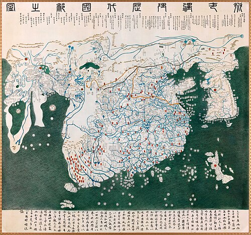
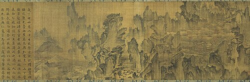
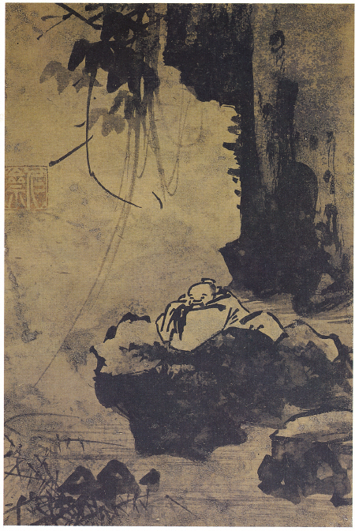
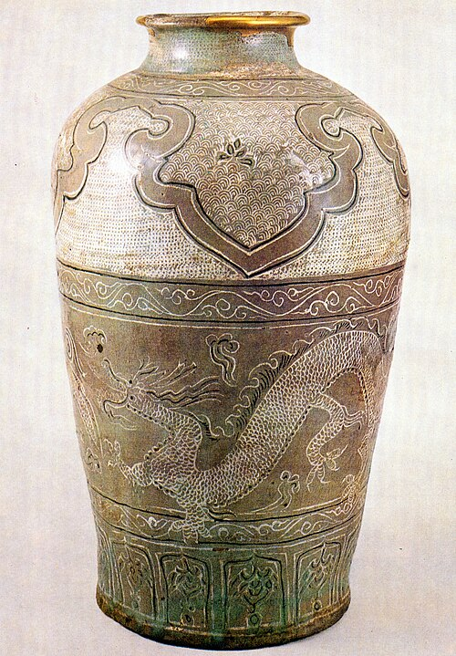
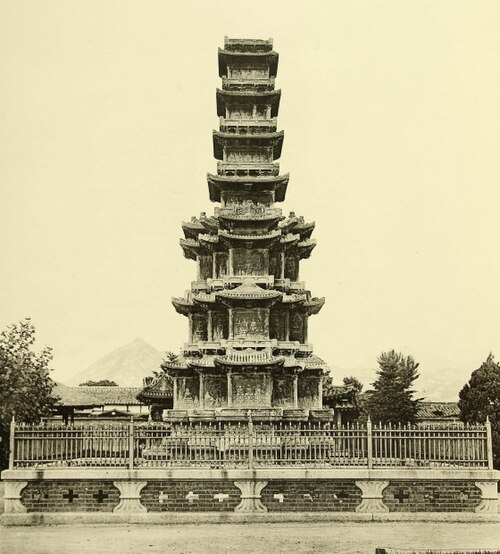
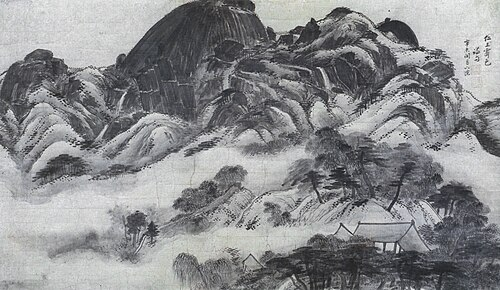
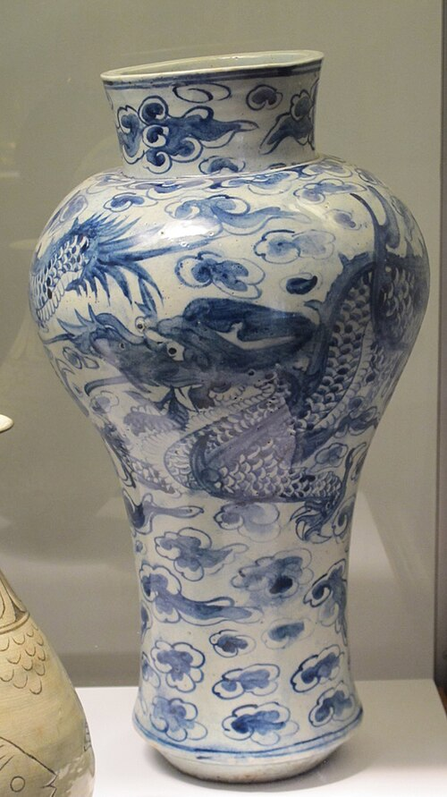
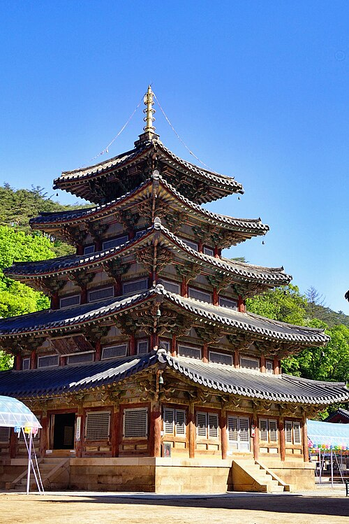
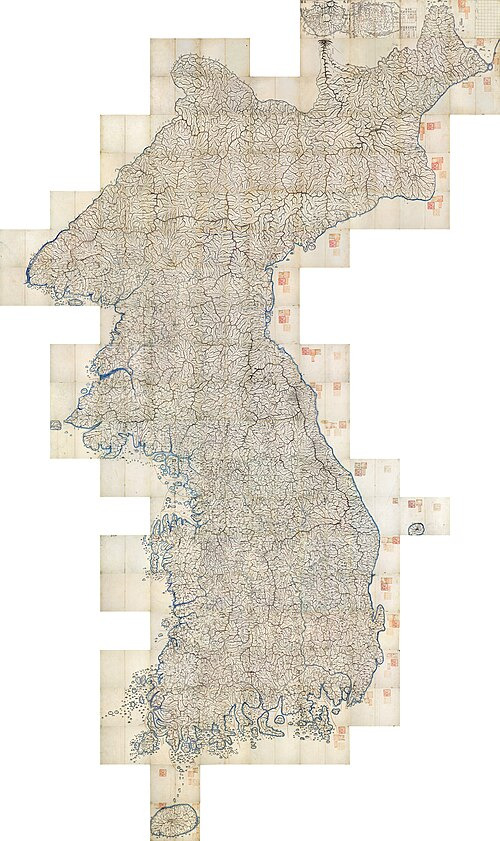

🏯
한국사능력검정시험 대비 · 필기노트 기반 정리
조선시대
개념·빈출주제 정리
개념·빈출주제 정리
건국·전기 정치 · 사림과 붕당 · 양대 전란(왜란·호란) · 전기 경제·사회·문화 · 붕당~환국~탕평~세도정치 · 후기 경제·사회·실학·문화
⌨ PageDown / → : 정답 한 개씩 공개 | PageUp / ← : 정답 숨기기 | 터치 스와이프 지원
목차
이 편에서 다루는 내용
- 01조선의 건국과 태조·태종위화도 회군, 6조 직계제
- 02세종의 정치훈민정음, 4군 6진, 과학 기구
- 03세조·성종과 사화계유정난, 무오~을사사화
- 04중앙 통치 체제의정부 6조, 3사, 승정원
- 05지방·군사 제도8도, 유향소·서원·향약, 5위
- 06사림의 성장과 붕당의 시작동인·서인의 분화
- 07임진왜란3대첩, 훈련도감, 의병
- 08광해군의 중립외교와 호란정묘호란, 병자호란
- 09조선전기 경제과전법 → 직전법 변화
- 10조선전기 사회양천제·반상제, 향촌 사회
- 11조선전기 문화 ①유학·역사서·지리서·훈민정음
- 12전기 문화재 (사진)혼일강리역대국도지도
- 13조선전기 문화 ②과학·의학·건축·공예·회화
- 14전기 회화 (사진)몽유도원도, 고사관수도
- 15전기 공예·건축 (사진)분청사기, 원각사지 10층 석탑
- 16붕당정치와 예송논쟁기해예송, 갑인예송
- 17환국과 탕평정치숙종 환국, 영조·정조 탕평
- 18세도정치비변사 장악, 삼정의 문란
- 19후기 대외관계와 군사제도백두산정계비, 5군영
- 20후기 수취제도의 변화영정법·대동법·균역법
- 21후기 상공업의 발달사상, 도고, 덕대
- 22후기 신분제의 동요양반 증가, 노비 감소
- 2319세기 민란과 새로운 사상홍경래의 난, 임술농민봉기
- 24실학 ① 중농학파유형원·이익·정약용
- 25실학 ② 중상학파유수원·홍대용·박지원·박제가
- 26후기 문화 (서민·국학)한글소설·판소리, 역사·지리서
- 27후기 회화 (사진)인왕제색도, 김홍도 씨름도
- 28후기 공예·건축 (사진)청화백자, 법주사 팔상전
- 29후기 지도 (사진)대동여지도
01 조선 건국
조선의 건국과 태조 · 태종
🏯 조선의 건국
- 위화도 회군 → 실시 → 건국(1392, 이성계+정도전)
- 국호 '조선', 천도(교통·풍수의 중심지)
- : 재상 중심 정치 주장, 『』(불교 비판)·『조선경국전』 저술
👑 태조 · 태종
- : 한양 도성 설계, 건설, 과전법 시행
- (정도전 제거) → 이방원(태종) 집권
- (왕권↑): , 사병 혁파, 양전, ·신문고 시행
⭐ 흐름: 위화도 회군(1388) → 과전법(1391) → 조선 건국(1392) → 한양 천도(1394) → 왕자의 난 → 태종의 왕권 강화
02 조선 전기
세종의 정치 — 왕권과 신권의 조화
전성기세종
- 중앙 정치: 실시, 설치(학문 연구)
- 영토 확장: 의 4군, 의 6진 개척 → 압록강~두만강 국경 확정 / (대마도) 정벌(이종무)
- 자주 문화: 창제
- 과학 기구: 측우기·앙부일구·자격루(시간·강우량 측정), (우리 실정에 맞는 역법)
- 서적 편찬: (국산 약재 의학서), (우리 풍토 농법서)
⭐ 세종은 왕권-신권의 조화를 추구하면서도 훈민정음·과학 기구 등 자주적 민족 문화를 크게 발전시킨 조선 전기의 전성기 군주
03 조선 전기
세조 · 성종과 사화의 전개
👑 세조 · 성종
- ( 등) → 단종 폐위, 세조 즉위
- 세조: 부활(왕권 강화), 집현전 폐지, 편찬 시작
- 성종: 경국대전 완성, 설치, 편찬
사림의 피해사화의 전개
- 연산군: (김종직의 조의제문, 김일손) / (폐비 윤씨 사건)
- 중종: (조광조의 개혁 — 현량과·위훈삭제 → 훈구파 반발로 제거)
- 명종: (외척 대윤 윤임 vs 소윤 윤원형), 의 난
⭐ 사화의 순서: 무오 → 갑자 → 기묘 → 을사 — 훈구파와 사림파의 대립 속에서 사림이 정치적 피해를 입은 사건들
04 통치체제
중앙 통치 체제
🏛 중앙 관제
- (최고 합의 기구, 재상) 아래 (이·호·예·병·형·공)
- : 사간원(간쟁)·사헌부(감찰)·홍문관(경연) — 언론 기능
- (왕명 출납, 도승지) · (국가 중죄 재판)
- 한성부(수도 행정), (역사 편찬-실록), 성균관(최고 교육기관)
⚖ 관리 선발
- : 문과(양인 이상 응시 가능, 서얼 제한)·무과·잡과
- 천거: 고위 관료가 추천(주로 조광조 등 사림이 주장한 )
- 문음(2품 이상 자손): 고위 관료 진출 제한
- 취재: 하급 관리 채용
⭐ 세종의 의정부 서사제(왕권-신권 조화) ↔ 세조·성종의 6조 직계제(왕권 강화) — 관제 운영 방식으로 왕권의 강약을 파악하는 문제가 자주 출제됨
05 통치체제
지방 · 군사 제도
🗺 지방 제도
- 전국 , 모든 군현에 지방관(수령) 파견 — 고려보다 중앙 집권 강화
- (감사, 도 단위) → (부목군현) → 향리(세습 아전, 권한 약화)
- 사림의 향촌 기구: (향안·향회), (교육+제사), (농민 통제)
⚔ 군사 제도
- 양인 개병 + 농병일치 = 의무병제
- 중앙군: / 지방군:
- : 지역 단위로 스스로 방어하는 체제
⭐ 조선은 모든 군현에 지방관을 파견 — 고려의 향·부곡·소 및 속현 체제와 대비되는 중앙 집권 강화 포인트
06 사림·붕당
사림의 성장과 붕당의 시작
📚 사림의 학맥
- 사림의 뿌리: 정몽주 → 길재 → 김숙자 → (무오사화의 배경)
- 서경덕·이언적 계보 → · → → 북인·남인
- 조광조·김안국 계보 → · → → 노론·소론
⚡ 붕당의 시작 (선조)
- 척신 정치 청산 문제를 둘러싸고 사림 내부가 분화
- 임명권, 척신 잔재 처리 방식을 놓고 대립
- (김효원 중심) vs (심의겸 중심)
⭐ 동인(이황·조식 계열, 영남학파) vs 서인(이이·성혼 계열, 기호학파) — 이후 동인은 북인·남인으로, 서인은 노론·소론으로 다시 분화됨
07 양대 전란
임진왜란
전쟁 발발전쟁의 전개
- 함락(1592) → 신립의 전투 패배 → 선조 의주로 피난
- 3대첩: 대첩(이순신), 대첩(김시민), 대첩(권율)
- 의병 활약(곽재우·조헌 등) / 조·명 연합군의 탈환
🛡 전쟁의 영향
- 설치(5군영의 시초, 직업 군인 — 포수·살수·사수 삼수병)
- : 양반~노비까지 편성된 지방군
- 정유재란(1597) 이후 (1609, 일본과 국교 재개) → 통신사 재개
⭐ 훈련도감(중앙, 직업 군인) ↔ 속오군(지방, 신분 혼성 편제) — 임진왜란을 계기로 군사 제도가 크게 변화함
08 양대 전란
광해군의 중립외교와 호란
🕊 광해군의 중립외교
- 후금과 명 사이에서 실시(강홍립 파견)
- 전후 복구: 최초 시행(경기), 허준의 편찬
- 인조반정으로 폐위(명분: 친명배금 서인 세력, 폐모살제)
청과의 전쟁호란의 발생
- 인조의 정책 → 이괄의 난(내부 갈등)
- (1627, 후금): 강화도 피난 → 형제 관계로 강화
- (1636, 청): 항전(최명길 주화론 vs 김상헌 척화론) → 삼전도 항복, 청과 군신 관계
⭐ 광해군의 실리적 중립외교 → 인조의 친명배금(명분론) → 정묘호란·병자호란 — 이후 효종의 북벌론(송시열)으로 이어지는 흐름을 기억
09 경제
조선전기 경제 — 토지·수취 제도
| 제도 | 시행 왕 | 지급 대상 |
|---|---|---|
| 공양왕(고려말) | 전·현직 관리(경기, 수조권만) | |
| 세조 | 관리만(수신전·휼양전 폐지) | |
| 성종 | 국가가 직접 수조(관리의 수조권 행사 제한) | |
| 직전법 폐지 | 명종 | 수조권 지급 자체 폐지 → 만 지급 |
⭐ 흐름: 과전법→직전법→관수관급제→직전법 폐지 — 수조권이 있는 토지가 점차 줄고 국가의 토지 지배력이 강화됨
💰 조세 제도
- (세종): (토지 비옥도)+(그해 풍흉) → 관행상 최저 세율 적용
- 공납: 특산물(호별) → 폐단 발생(후기 대동법으로 개혁)
- 역: 군역(정군+보인)·요역 → 후기 대립·방군수포 폐단(후기 균역법으로 개혁)
10 사회
조선전기 사회 — 신분 제도와 향촌 사회
👥 신분 제도
- 법제상 (양인/천민) → 실제 운영은 (양반·중인·상민·천민)
- 양반(문반+무반), 중인(서얼·기술관), (농민·상공업자, 신량역천)
- 천민: 가 대다수(매매·상속·증여 대상)
🏥 사회 제도 · 향촌 사회
- 법률: 대명률(형법)+경국대전(민법) — 관찰사·수령이 사법+행정+군사 겸임
- 구휼: 의창·상평창, 의료: 동서 대비원·혜민국·제생원
- 향촌 자치: (수령 자문), (백운동서원 → 사액), (4대 덕목)
⭐ 사림은 서원(교육)과 향약(자치 규약)을 기반으로 향촌 사회에서 영향력을 키워나감
11 전기 문화
조선전기 문화 ① — 유학·역사서·지리서
📚 유학과 교육
- 중앙 (대사성), 지방 4부 학당·향교
- 15세기: 관학 중심(성균관·향교) → 16세기: 사림의 확산(성리학 심화)
📖 역사서 · 지리서 · 훈민정음
- 역사서: 정도전의 고려국사 → (기전체)·고려사절요(편년체) → 성종 때 (고대~고려 통사)
- 지리서: (태종, 세계지도) / 동국여지승람(성종)
- 법전: (성종, 국가 의례 정비)
- 창제(세종) — 삼강행실도 등 윤리서 보급에 활용
⭐ 15세기 문화(관학 중심, 자주적·민족적) → 16세기 문화(사림 중심, 서원·성리학 심화)로 흐름이 바뀜
12 전기 문화
전기 문화재 — 사진으로 확인하기

태종 · 세계지도
💡 현재 남아 있는 원본은 없고 일본에 필사본 2점이 전해짐 — 아시아·아프리카·유럽까지 그려진 당대 세계 최고 수준의 세계지도
13 전기 문화
조선전기 문화 ② — 과학·의학·건축·공예·회화
🔬 과학·의학
- 세종: ··(시계), (역법)
- 활자: 태종 → 세종
- (국산 약재 처방), (우리 풍토 농법)
🏛 건축
- 경복궁 등 궁궐, 종묘·사직단(유교 국가 상징)
- 세조 때 (대리석, 고려 경천사지 10층 석탑 계승)
🎨 공예 · 회화
- 공예: 15세기 → 16세기 순백자(사대부 취향)
- 회화: 안견의 (안평대군의 꿈), 강희안의
⭐ 15세기 분청사기(자유분방) → 16세기 백자(사대부의 소박한 취향) — 공예 양식 변화가 사대부 문화 확산과 연결됨
14 전기 문화
전기 회화 — 사진으로 확인하기

안견 · 안평대군의 꿈

강희안 · 선비의 여유
💡 몽유도원도는 안평대군이 꿈에서 본 무릉도원을 3일 만에 그리게 한 안견의 대표작(현재 일본 덴리대학 소장)
15 전기 문화
전기 공예·건축 — 사진으로 확인하기

15세기 공예

세조 · 대리석
⭐ 원각사지 10층 석탑은 고려의 경천사지 10층 석탑과 양식이 매우 비슷함 — 두 탑을 사진으로 구분하는 문제가 단골 출제
16 붕당정치
붕당정치의 전개와 예송논쟁
⚡ 붕당정치의 전개
- 선조: 동인 집권 → (정여립 모반 사건)로 서인 우세
- 광해군: 북인 집권 / 인조: 서인 집권(친명배금, 남인과 공존)
- 효종: ( 등 서인 중심)
⚡ 예송논쟁 (현종)
- 효종의 왕위 계승 정당성과 관련해 자의대비(인조의 계비)의 상복 기간을 둘러싼 논쟁
- (1659, 효종 사망) · (1674, 효종비 사망)
- 서인(기년설=1년) vs 남인(3년설) — 왕권·신권 관계에 대한 입장 차이가 배경
💡 예송논쟁은 상복 예법을 둘러싼 논쟁이지만, 실제로는 붕당 간 정치적 대립과 왕권-신권 관계에 대한 입장차가 근본 원인
17 환국·탕평
환국과 탕평정치
⚡ 숙종의 환국
- 왕이 붕당 세력 교체를 주도 → (서인) → (남인, 장희빈) → (서인 재집권)
- 잦은 환국으로 붕당 대립 격화, 노론·소론 분화, 설치(5군영 완성)
탕평영조 · 정조
- 영조: 건립, 서원 정리, 편찬, 시행, 사도세자 사건
- 정조: , 정치기구화, (친위부대), 건설, (금난전권 폐지), 대전통편 편찬
⭐ 숙종의 환국은 왕권 강화 수단이었지만 붕당 대립을 오히려 격화시킴 → 영조·정조는 탕평책으로 대립 완화를 시도
18 세도정치
세도정치
정치 문란세도정치의 전개
- 정조 사후 특정 가문(안동 김씨·풍양 조씨 등)이 권력 독점(순조·헌종·철종)
- 장악(핵심 권력 기구화), 성행
- 의 문란: 전정(토지세)·군정(군포)·환곡(구휼곡 대여) 모두 부정부패 심화
⭐ 세도정치기의 삼정 문란은 19세기 전국적 농민 봉기(홍경래의 난, 임술농민봉기)의 직접적 원인이 됨
19 대외관계
조선후기 대외관계와 군사 제도
🛡 대외 관계
- 효종: (송시열) — 실행되지 못함, 나선정벌(청 요청으로 러시아 견제)
- 숙종: (청과 국경 확정) → 이후 귀속 문제, 1909년 (일본이 청에 귀속)
- : 울릉도·독도가 조선 영토임을 일본에 확인
- 일본과 파견 지속(선진 문물 전달)
⚔ 군사 제도 변화
- 중앙군: 5위 → (훈련도감·어영청·총융청·수어청·금위영)
- 지방군: (양반~노비 혼성) → 진관 체제 복구
⭐ 백두산정계비의 '토문강' 해석 차이가 훗날 간도 귀속 분쟁의 원인 — 안용복의 활약과 함께 독도·간도 영유권 문제는 근현대사까지 이어지는 단골 주제
20 경제
조선후기 수취 제도의 변화
| 구분 | 제도 | 시행 왕 | 내용 |
|---|---|---|---|
| 전세 | 인조 | 풍흉 관계없이 1결당 로 고정 | |
| 공납 | 광해군(경기) → 숙종(전국) | 특산물 → 쌀·베·동전(대동세)로 통일, 등장 | |
| 역 | 영조 | 군포 2필 → 로 감축, 결작·선무군관포로 보충 |
⭐ 전세·공납·역 모두 부담을 완화하고 토지 기준으로 통일하려는 방향으로 개편됨 — 대동법 시행으로 등장한 공인이 상품 화폐 경제 발달에 기여
21 경제
조선후기 상공업의 발달
🏪 상업의 발달
- (대동법 결과 등장) + 사상: 경강상인, (개성, 인삼), (의주, 대청무역), (동래, 대일무역)
- (독점적 도매상인) 성장, 장시 발달(보부상), 포구 상업(객주·여각)
- 화폐: 전국 유통(숙종)
🏭 수공업 · 광업
- 민영 수공업자 등장, (상인이 자본·원료 선지급) 유행
- 민영 광산 개발(설점수세제) → (전문 경영인)가 자본가+임노동자를 고용해 운영
💡 대동법(공인 등장) → 상품화폐경제 발달 → 사상 성장·도고·민영 수공업·광업까지 이어지는 흐름을 기억
22 사회
조선후기 신분제의 동요
📈 신분 이동
- 양반층 증가(족보 위조, 납속책·공명첩) / 상민·노비 감소
- 중인: 서얼의 신분 상승 운동(), 기술직 중인의 조직(위항문학)
- 상민: 부농층의 신분 상승(납속·공명첩 매입) — 향회 장악력 약화
⛓ 노비 제도의 변화
- 시행
- 공노비의 증가 → 순조 때 (1801)
⭐ 신분제 동요의 핵심은 "양반 수 ↑, 상민·노비 수 ↓" — 조선 후기 사회 변화의 근본 흐름
23 사회
19세기 농민 봉기와 새로운 사상
📢 민의 성장과 새로운 사상
- 예언 사상(정감록 등) 확산, 평등 의식 성장
- (천주교): 신앙으로 수용 → 등으로 탄압(신유박해)
- ( 창시): 인내천·시천주 사상, 동경대전·용담유사
농민 봉기19세기 민란
- (1811, 순조): 서북 지역 차별에 항거, 정주성에서 진압
- (1862, 철종): 진주에서 시작(의 수탈, 유계춘 주도) → 전국 확산
- 안핵사 파견, 설치(근본 해결은 실패)
⭐ 홍경래의 난(지역 차별) → 임술 농민 봉기(삼정 문란) — 세도정치의 모순이 누적되어 폭발한 사건들
24 실학
조선후기 실학 ① — 중농학파
🌾 중농학파 (농업 중심 개혁)
- : 『』, (신분에 따라 토지 차등 분배)
- : 『』, (영업전 설정, 매매 금지로 최소 생계 보장)
- : (마을 단위 공동 경작) → 이후 정전론으로 수정, 『』·경세유표·흠흠신서(1표 2서), 설계(수원 화성 건축에 활용)
⭐ 중농학파는 토지 제도 개혁을 통한 자영농 육성을 공통적으로 주장 — 학자·저서·주장을 짝지어 암기
25 실학
조선후기 실학 ② — 중상학파(북학파)
🏭 중상학파 (상공업 중심 개혁)
- : 『』, 사농공상의 직업적 평등 주장
- : (지구 자전) 주장, 혼천의 제작, 중국 중심 세계관 비판
- : 『』, 양반전·과농소초 등으로 사회 비판, 수레·선박 이용 주장
- : 『』, 소비를 우물물에 비유해 (생산 확대) 주장
⭐ 중상학파는 청의 문물을 배우자는 북학론을 주장, 상공업 진흥과 기술 혁신을 통한 부국강병을 강조 — 중농학파와 대비해서 암기
26 후기 문화
조선후기 문화 — 서민 문화와 국학
🎭 서민 문화의 성장
- 배경: 상품 화폐 경제 발달, 서당 교육 확산
- , ·탈춤(산대놀이), 사설시조(형식 파괴)
📚 국학의 발달
- 역사: 안정복의 (독자적 정통론), 유득공의 (남북국시대 용어 최초 사용), 이긍익의 연려실기술
- 지리: 정상기의 동국지도(최초 100리 척), 의 (목판)
- 기타: 신경준의 훈민정음운해, 이수광의 지봉유설(백과사전류)
⭐ 유득공의 『발해고』에서 처음 사용한 "남북국시대"라는 용어는 지금 우리가 배우는 시대 구분 명칭의 기원
27 후기 문화
후기 회화 — 사진으로 확인하기

정선 · 진경산수화

김홍도 · 풍속화
⭐ 진경산수화(정선, 우리 산천을 실제로 보고 그림) vs 풍속화(김홍도·신윤복, 서민의 생활 모습) — 화풍으로 구분하는 문제가 자주 출제
28 후기 문화
후기 공예·건축 — 사진으로 확인하기

후기 공예

17세기 · 현존 유일 목탑
💡 17세기에는 양반·왕실 후원의 대형 사찰(법주사 팔상전 등), 18~19세기에는 부농·상민 후원의 사찰 건축이 유행
29 후기 문화
후기 지도 — 사진으로 확인하기

김정호 · 목판 지도
⭐ 대동여지도는 목판으로 제작되어 대량 인쇄가 가능했고, 10리마다 눈금을 표시해 거리를 알 수 있게 한 것이 특징
정리
전체 흐름 한눈에 보기
건국·기틀태조·태종(건국, 6조 직계제) → 세종(훈민정음, 4군 6진, 과학 기구) → 세조·성종(경국대전, 사화의 배경)
전기 정치·전란사림의 성장(붕당의 시작) → 임진왜란(3대첩·훈련도감) → 광해군 중립외교 → 정묘·병자호란
후기 정치붕당정치(예송논쟁) → 환국(숙종) → 탕평(영조·정조) → 세도정치(순조~철종)
후기 경제·사회영정법·대동법·균역법 → 상품화폐경제(사상·도고·덕대) → 신분제 동요 → 19세기 민란(홍경래·임술)
후기 문화실학(중농·중상) → 국학(역사·지리) → 서민 문화(한글소설·판소리·풍속화) → 진경산수화·추사체
⭐ 시험 대비 최종 체크: ① 전기 왕대별 정치(태조~성종) ② 사화 순서(무오→갑자→기묘→을사) ③ 전기 토지 제도 변화(과전법→직전법→관수관급제) ④ 붕당~환국~탕평~세도정치 흐름 ⑤ 후기 수취 제도(영정법·대동법·균역법) ⑥ 실학자별 저서·주장 — 이 여섯 유형이 최다 출제 포인트
🎉
수고하셨습니다!
한국사능력검정시험 — 조선시대 개념 정리를 모두 마쳤습니다.
📌 핵심 흐름
조선 건국~세종의 기틀 마련 → 사화와 붕당의 시작 → 임진왜란·호란 극복 → 붕당정치~환국~탕평~세도정치 → 수취 제도 개혁과 상품화폐경제 발달 → 실학과 서민 문화의 성장
다음 편은 근대~현대(개항기~일제강점기~현대)를 다룰 예정입니다.
조선 건국~세종의 기틀 마련 → 사화와 붕당의 시작 → 임진왜란·호란 극복 → 붕당정치~환국~탕평~세도정치 → 수취 제도 개혁과 상품화폐경제 발달 → 실학과 서민 문화의 성장
다음 편은 근대~현대(개항기~일제강점기~현대)를 다룰 예정입니다.